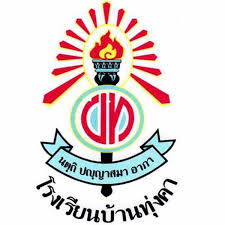

ผู้จัดทำ
ชื่อ ฐีรภาสกร จุลพันธ์
เกิดเมื่อวันที่ 19 ตุลาคม พ.ศ. 2549 ปัจจุบันมีอายุ 17 ปี ชื่อเล่น ชาณ
ข้อมูลด้านการศึกษา
ระดับชั้นอนุบาล 1 - ระดับชั้นประถมศึกษาปีที่ 6 ศึกษาที่ โรงเรียนวรรณวิทย์

ระดับชั้นมัธยมศึกษาปีที่ 1 - ระดับชั้นมัธยมศึกษาปีที่ 3 ศึกษาที่ โรงเรียนทุ่งคา

ปัจจุบันศึกษาอยู่ในระดับชันประกาศนียบัตรวิชาชีพปี่ที่ 2 สถานศึกษา คือ วิทยาลัยเทคนิคสัตหีบ
งานอดิเรกและสิ่งที่สนใจ
งานอดิเรก : ดูหนัง ฟังเพลง เล่นเกม เที่ยว
สิ่งที่สนใจ : เกี่ยวกับอุปกรณ์คอมพิวเตอร์
แรงบันดาลใจในการเรียนสาขา สท.
สนใจด้านคอมพิวเตอร์เพราะตามพี่ชายเห็นทำงานคอมตั้งแต่เด็กเลยสนใจเรื่องคอมมาโดยตลอดแหละชอบเล่นเกมด้วย
แหละสนใจด้านเขียนโปรแกรม เลยมาเรียนสารสนเทศ
ผลงาน/เกียรติคุณ
เคยแข่งว่ายน้ำกีฬาสีแล้วได้เรียนทองและได้ยศยิ่งธนูลูกเสือ